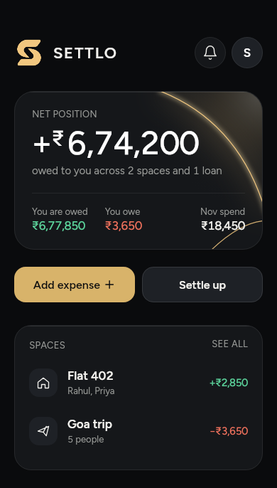
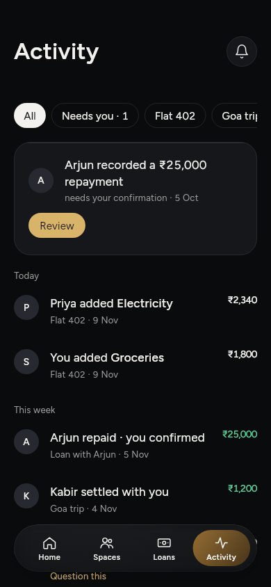
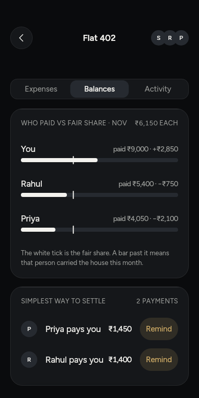
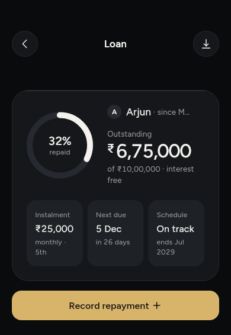
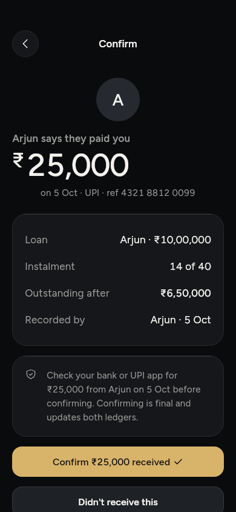

Good friends, clear balances
The flat’s rent and groceries. The Goa trip. The money you lent a friend. Settlo keeps track of who paid and who owes, and you settle up in your own UPI app.
Email us for beta accessiPhone, TestFlight beta. Android later.

The Goa trip, three weeks later
Five of you, one villa, and a list in someone’s notes app that stopped on day two. This time every expense went into the Goa trip space as it happened. Now it’s time to square up.
-
You owe Kabir ₹3,650. Settle up works out the amount that clears your share of the trip.
-
You pay in your UPI app. Settlo opens it with the amount and Kabir’s UPI ID filled in. You approve it there; Settlo never touches the money. Paid in cash? Record that instead.
-

Kabir confirms the payment arrived. Until then it stays pending. Activity keeps the trail for everyone and shows what still needs you.
Rent, electricity, Wi-Fi and the cook’s salary
Flat 402 is three people and a dozen small bills a month. Add each one when it happens: who paid, and how to split it, equally or by exact amounts, percentages or shares.
Balances sets what each person paid against a fair share and gives the simplest way to settle. This month, Priya pays you ₹1,450 and Rahul pays you ₹1,400.
Add flatmates by phone number. They verify it and choose whether to join. Settlo never uploads your address book.



₹10,00,000 to Arjun, back in instalments
A loan to a friend isn’t a grocery bill, so Settlo keeps it apart: what you lent, the instalments, and what’s still outstanding.
When Arjun records a ₹25,000 repayment, it waits for you. Check your bank or UPI app, then confirm it, or say you didn’t receive it. It only counts once you confirm. You can download a statement whenever you need one.
Settlo keeps the record. Your UPI app moves the money.
Settlo can’t see whether a payment went through, which is why the other person confirms it. Your account and shared records are hosted in Mumbai. Settlo doesn’t read or upload your contacts, and there are no ads, analytics or tracking.
Saved records stay on your phone when the signal drops, and changes sync when you’re back online. On supported iPhones, a friend’s pending settle-up waits on the Lock Screen and in the Dynamic Island. Export a space as CSV and a summary PDF whenever you like.
You can delete your account from Profile at any time. Shared expenses and loans stay in the other people’s records; the privacy policy explains exactly what stays.
Questions
Can I use Settlo on my phone?
Settlo is an iPhone TestFlight beta. Email us to ask about beta access. Android is planned for later; there is no public App Store or Google Play release yet.
How do I split expenses with flatmates?
Create a space for your flat, add people by phone number, and record who paid. Split expenses equally or use exact amounts, percentages or shares. Settlo keeps the balances together.
Can I track money lent to friends?
Yes. Record a loan between two people and track repayments separately from shared expenses. A repayment counts only after the other person confirms it.
Does Settlo make the UPI payment?
No. Settlo opens your UPI app with the amount and payee details filled in. You approve the payment there, record it in Settlo, and the other person confirms. Settlo cannot see whether a payment went through.
What happens when I am offline?
Your saved records stay available on your phone. Changes made offline are queued and sent when you reconnect. Sign in online first, and let pending changes sync before signing out.
Can I delete my account?
Yes. In the app, open Profile and choose Delete account. It happens at once and cannot be undone. If you can’t sign in, email settlo@hellojosh.studio. Your sign-in is removed. Your profile becomes “Deleted user”, with its phone number and UPI ID removed; shared expenses, loans and their history stay in the other people’s records.
Settlo is in beta on iPhone
It’s on TestFlight for now, and Android comes later. If you’d like to try it, write to us.
Email us for beta access